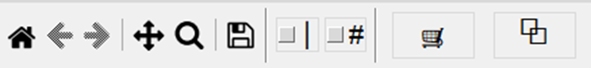

Chart Toolbar
The chart toolbar provides quick access to common chart operations. It appears at the bottom of every chart window.

Toolbar Buttons
From left to right, the toolbar contains the following buttons:
- Home (house icon) - Resets the chart view to show all data. Use this to return to the original view after panning or zooming.
- Back (left arrow) - Returns to the previous view in the navigation history. Useful for undoing a zoom or pan operation.
- Forward (right arrow) - Moves forward in the navigation history after using the Back button.
- Pan (four-way arrows) - Activates pan mode. Click and drag on the chart to move the visible area. Right-click and drag to zoom in on a specific area.
- Zoom (magnifying glass) - Activates zoom mode. Click and drag to draw a rectangle around the area you want to zoom into.
- Vertical Cursor (vertical line icon) - Displays a vertical line that follows your mouse position across the chart. This helps you align and compare values at the same point in time across multiple data series.
- Values (hashtag icon) - Shows the actual data values at the current cursor position. When enabled, you can see the exact values of each plotted series as you move across the chart.
- Add to Cart (shopping cart icon) - Adds the current chart configuration to the chart cart. This allows you to save multiple chart setups and view them together or export them later.
- Pop-Out (two boxes icon) - Opens the chart in a separate, resizable window. This is useful when you want to view the chart at a larger size or compare it side-by-side with other windows.
- Save (floppy disk icon) - Saves the chart as a single-page PDF file. The saved PDF includes chart metadata automatically attached from the snapshot file, such as engine serial number, engine hours, and snapshot date. This makes it easy to identify the source of the chart data when reviewing saved charts later.
Using the Toolbar
The toolbar buttons toggle between different interaction modes:
- Only one mode (Pan or Zoom) can be active at a time
- Click the active button again to deactivate it and return to normal pointer mode
- Use the mouse scroll wheel to zoom in and out at any time
Tip: When saving a chart as PDF, the file will contain metadata from the original snapshot.
This information helps you track which engine and snapshot the chart came from, even if the filename doesn't indicate it.